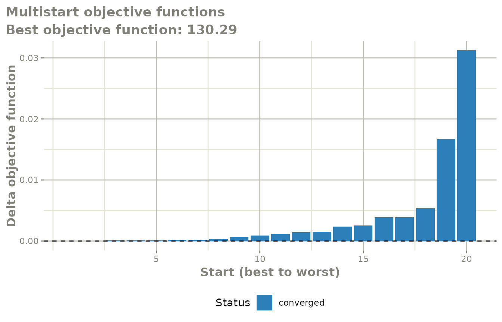
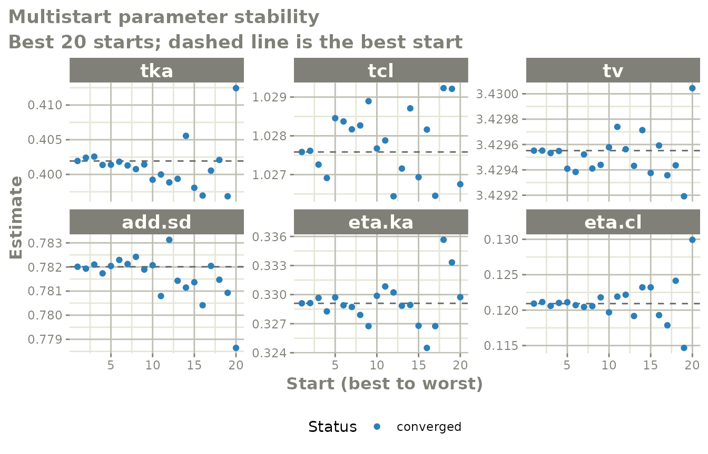

The question multistart answers
A population model is fit by minimising an objective function, and the minimiser only ever finds a minimum – the one downhill from wherever it started. Nothing in a converged fit tells you whether a different set of initial estimates would have found somewhere better.
multistart() answers that directly: it re-estimates the
model from many perturbed starting points and shows you what each one
found. If every start lands on the same objective function, the fit is
at a well-identified optimum. If several starts settle at visibly
different values, the fit you had was one of several local optima and
the parameter estimates should not be trusted at face value.
A first run
Start from an ordinary fit.
one.compartment <- function() {
ini({
tka <- 0.45
tcl <- 1
tv <- 3.45
eta.ka ~ 0.6
eta.cl ~ 0.3
add.sd <- 0.7
})
model({
ka <- exp(tka + eta.ka)
cl <- exp(tcl + eta.cl)
v <- exp(tv)
linCmt() ~ add(add.sd)
})
}
fit := nlmixr2(one.compartment, nlmixr2data::theo_sd, est = "focei",
control = list(print = 0))Then hand that fit to multistart(). Every option lives
in multistartControl(), which multistart()
accepts as a plain list.
ms := multistart(fit, control = list(n = 20, spread = 0.3))
ms
#> start OBJF dOBJF AIC BIC converged boundary
#> 1 1 130.2895 0.000000e+00 384.8893 402.1861 TRUE FALSE
#> 2 3 130.2895 5.470853e-06 384.8893 402.1861 TRUE FALSE
#> 3 7 130.2896 8.827511e-05 384.8894 402.1862 TRUE FALSE
#> 4 2 130.2896 9.266364e-05 384.8894 402.1862 TRUE FALSE
#> 5 16 130.2896 1.262509e-04 384.8894 402.1862 TRUE FALSE
#> 6 6 130.2897 1.622165e-04 384.8894 402.1863 TRUE FALSE
#> 7 14 130.2897 1.734840e-04 384.8895 402.1863 TRUE FALSE
#> 8 15 130.2898 2.977481e-04 384.8896 402.1864 TRUE FALSE
#> 9 5 130.2902 6.385620e-04 384.8899 402.1867 TRUE FALSE
#> 10 11 130.2904 9.244870e-04 384.8902 402.1870 TRUE FALSEThe first candidate is always the unperturbed starting point, so the
fit you began with is always in the comparison. The other
n - 1 candidates perturb every unfixed population parameter
on the scale it is estimated on – for a mu-referenced parameter that is
usually the log scale – and clip the result to the parameter’s declared
bounds. Between-subject variances are perturbed multiplicatively, so
they stay positive.
ms$summary has one row per estimated start, sorted best
first, with the objective function, its distance from the best
(dOBJF), the information criteria, whether the start
converged, whether it finished with a parameter at a boundary, and the
final estimate of every parameter. ms$best is the best fit
found and behaves like any other fit.
Reading the two plots
plot(ms)
The waterfall plot puts the starts in order, best to worst, and draws each one’s objective function relative to the best. What you want to see is a flat run of bars at zero: every start found the same optimum. A staircase means several optima; the height of each step is the objective-function penalty for landing there. Bars are coloured by whether the start converged and whether it finished at a boundary, and the subtitle counts the starts that failed outright.
plot(ms, "parameters")
The parameter-stability plot takes the best kBest starts
and shows how each parameter estimate varies across them, with the best
start’s value as a dashed reference line. This is the more diagnostic of
the two: a parameter whose estimate wanders while the objective function
barely moves is not identified by the data, whichever optimum you
take.
Controlling the search
How far the starts spread
spread is the fractional half-width of the perturbation,
so spread = 0.3 moves a parameter within 30% of its value.
omegaFold does the same job for the variances, as a
fold-range: the default of 2 draws each variance between
half and twice its initial value.
sampling picks how the interval is covered.
"uniform" is the default; "lhs" uses a Latin
hypercube, which covers the range more evenly for the same number of
starts and is usually the better choice when n is small;
"normal" concentrates the starts near the initial estimates
with occasional far excursions.
which restricts the perturbation to named parameters,
which is useful when you suspect one particular part of the model:
# a separate name: each `:=` target is its own cache entry
msWhich := multistart(fit, control = list(n = 20, which = c("tka", "tcl")))
msWhich
#> start OBJF dOBJF AIC BIC converged boundary
#> 1 4 130.2895 0.000000e+00 384.8893 402.1861 TRUE FALSE
#> 2 9 130.2895 6.025507e-07 384.8893 402.1861 TRUE FALSE
#> 3 20 130.2895 7.847939e-07 384.8893 402.1861 TRUE FALSE
#> 4 14 130.2895 3.219758e-06 384.8893 402.1861 TRUE FALSE
#> 5 5 130.2895 3.480192e-06 384.8893 402.1861 TRUE FALSE
#> 6 1 130.2895 3.723838e-06 384.8893 402.1861 TRUE FALSE
#> 7 18 130.2895 4.816477e-06 384.8893 402.1861 TRUE FALSE
#> 8 8 130.2895 5.434646e-06 384.8893 402.1861 TRUE FALSE
#> 9 19 130.2895 5.641796e-06 384.8893 402.1861 TRUE FALSE
#> 10 17 130.2895 6.510251e-06 384.8893 402.1861 TRUE FALSEScreening
Fully estimating twenty starts is expensive, and many of them start
somewhere hopeless. By default multistart() first evaluates
each candidate with an empirical-Bayes step only – a small fraction of
the cost of an estimation – and fully estimates just the best
nFit:
msScreen := multistart(fit, control = list(n = 50, nFit = 10, spread = 0.5))
head(msScreen$starts)
#> start seed screenOFV fitted tka tcl tv add.sd
#> 1 1 1235 130.2895 TRUE 0.40152295 1.0275730 3.429498 0.7820764
#> 2 2 1236 356.0790 TRUE 0.01522636 1.1532445 3.804255 0.9054558
#> 3 3 1237 743.8402 FALSE -0.08898130 0.7527491 3.999081 0.7963275
#> 4 4 1238 372.7510 FALSE 0.18425653 1.4626818 2.717245 1.1193720
#> 5 5 1239 821.1638 FALSE 0.08824574 0.7524156 2.800570 0.5847697
#> 6 6 1240 190.0571 TRUE 0.12032249 1.3467357 3.517627 1.1967345
#> eta.ka eta.cl
#> 1 0.3288761 0.12085004
#> 2 0.5424067 0.14679869
#> 3 0.4301163 0.12862469
#> 4 0.2445265 0.08746995
#> 5 0.2050017 0.06386997
#> 6 0.5206213 0.06438330ms$starts records the screening objective for every
candidate and which of them were estimated. Pass
screen = "none" to estimate all of them.
Screening is a cheap approximation, so it is a way of spending a
fixed budget well rather than a guarantee: a candidate that screens
badly can still be the one that would have found the best optimum. When
the budget allows it, screen = "none" is the more thorough
answer.
Where to perturb around
Starting from a fit, around = "final" (the default)
perturbs around that fit’s final estimates, which asks “is this a local
optimum?”. around = "initial" perturbs around the estimates
the fit started from, which asks “how sensitive was this fit to where I
started it?”. Both are worth running.
You can also skip the first fit entirely and give
multistart() a model and data:
msModel := multistart(one.compartment, nlmixr2data::theo_sd,
est = "focei", control = list(n = 20))
msModel
#> start OBJF dOBJF AIC BIC converged boundary
#> 1 9 130.2895 0.000000e+00 384.8893 402.1861 TRUE FALSE
#> 2 1 130.2895 2.234498e-05 384.8893 402.1861 TRUE FALSE
#> 3 11 130.2895 2.564410e-05 384.8893 402.1861 TRUE FALSE
#> 4 16 130.2895 3.333938e-05 384.8893 402.1861 TRUE FALSE
#> 5 6 130.2896 7.260501e-05 384.8894 402.1862 TRUE FALSE
#> 6 2 130.2897 1.401312e-04 384.8894 402.1862 TRUE FALSE
#> 7 7 130.2897 1.595570e-04 384.8894 402.1863 TRUE FALSE
#> 8 4 130.2897 1.713112e-04 384.8895 402.1863 TRUE FALSE
#> 9 18 130.2897 1.842884e-04 384.8895 402.1863 TRUE FALSE
#> 10 3 130.2898 3.083525e-04 384.8896 402.1864 TRUE FALSELong runs
Each start is cached to disk as it completes, so an interrupted run
resumes where it stopped – just call multistart() again
with the same arguments. Asking for more starts re-uses the ones already
estimated:
ms <- multistart(fit, control = list(n = 10)) # estimates 10
ms <- multistart(fit, control = list(n = 30)) # estimates the 20 new onesAnything that changes what a starting point is –
sampling, spread, which,
perturbOmega, omegaFold or seed –
gives the run its own cache, so a cached estimation is never reported
against a start it did not come from. Pass restart = TRUE
to discard the cache, or cacheDir = NA to never write
one.
cores estimates several starts at once. Be careful with
it: each estimation already runs across every available thread, so
multistart() pins each worker to a single thread to avoid
oversubscribing the machine. Whether that is faster than the serial
default depends on how well the model parallelises over subjects – a
model that already uses all your cores efficiently is usually better
left serial. Parallel estimation is not available on Windows.
Reproducibility
Every nlmixr2 estimator runs inside its own seeded block, so calling
set.seed() before a fit does not change it.
multistart() follows the same discipline:
multistartControl(seed=) seeds the perturbation draws and
gives each start its own derived seed, and the run neither depends on
nor disturbs the surrounding RNG state. The same seed gives
the same starts and the same results.
ms$starts records the seed used for each start alongside
its starting estimates, so any individual start can be reproduced on its
own.